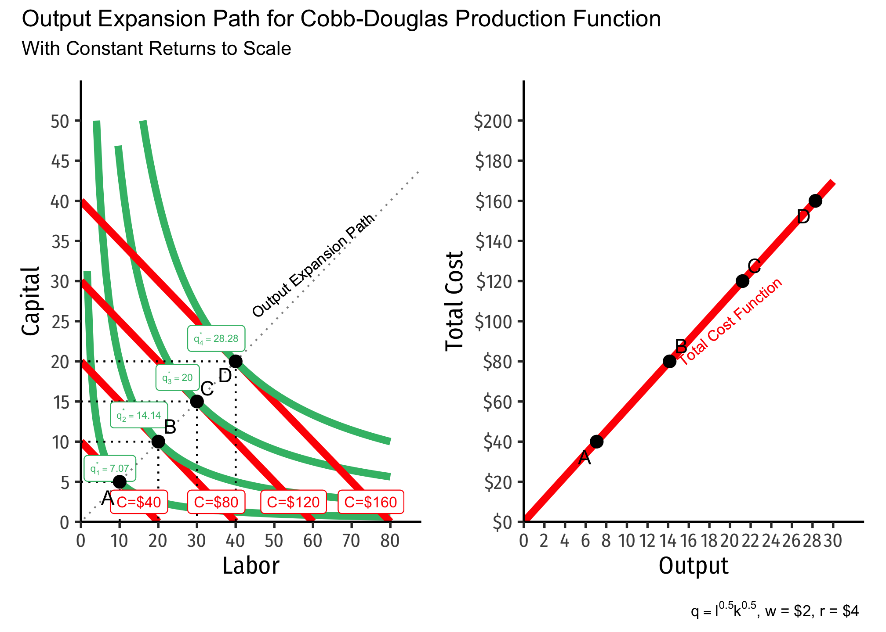
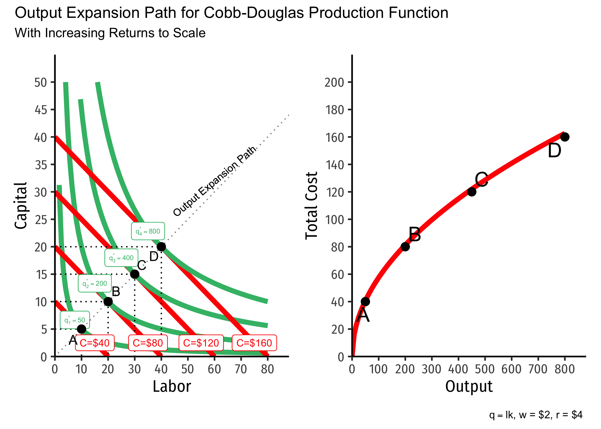
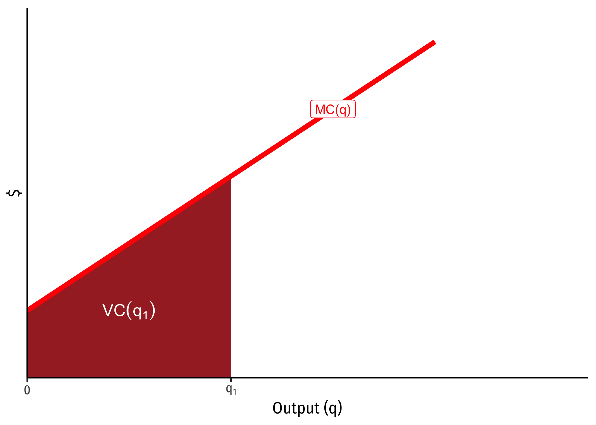
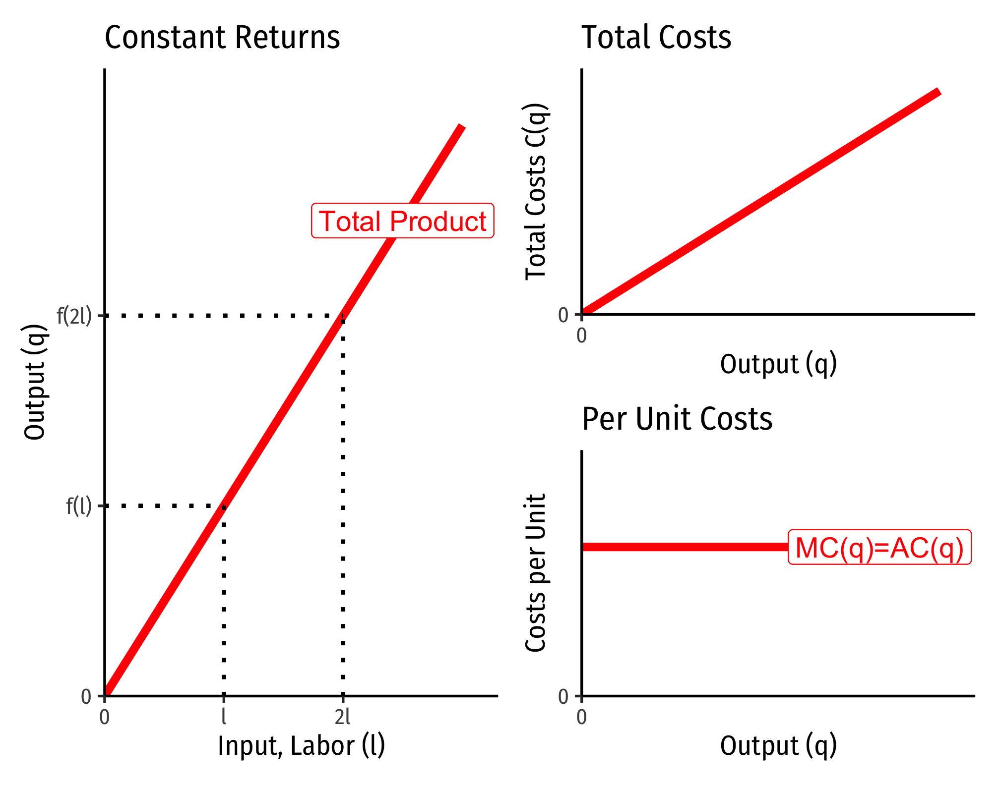
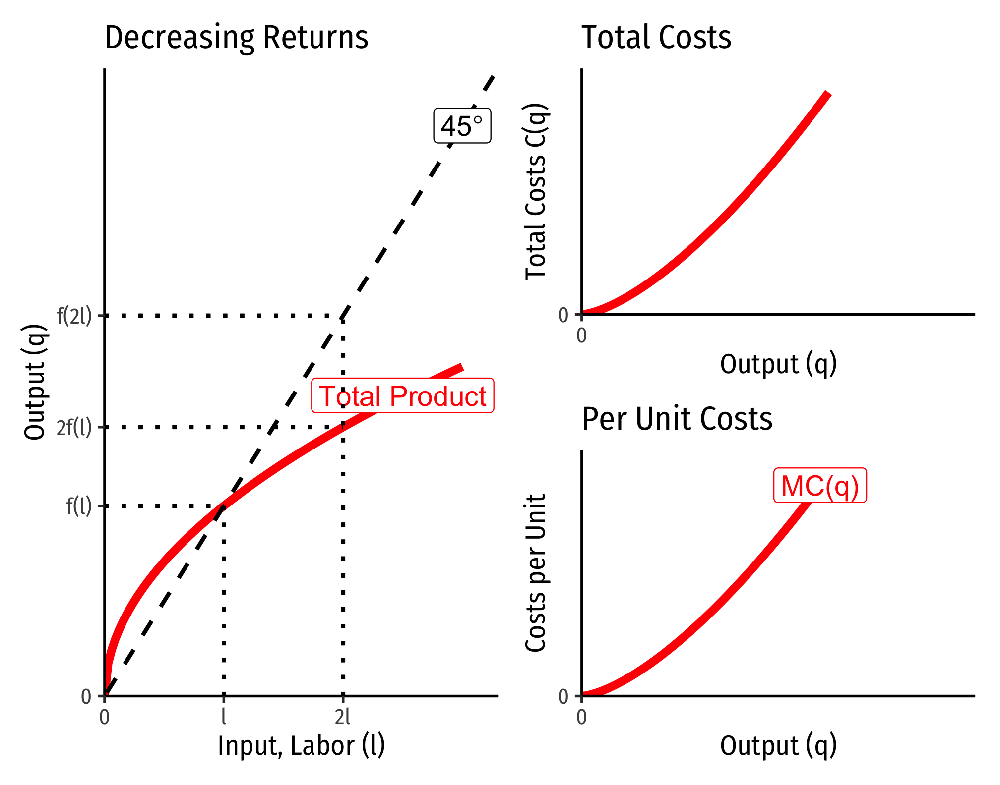
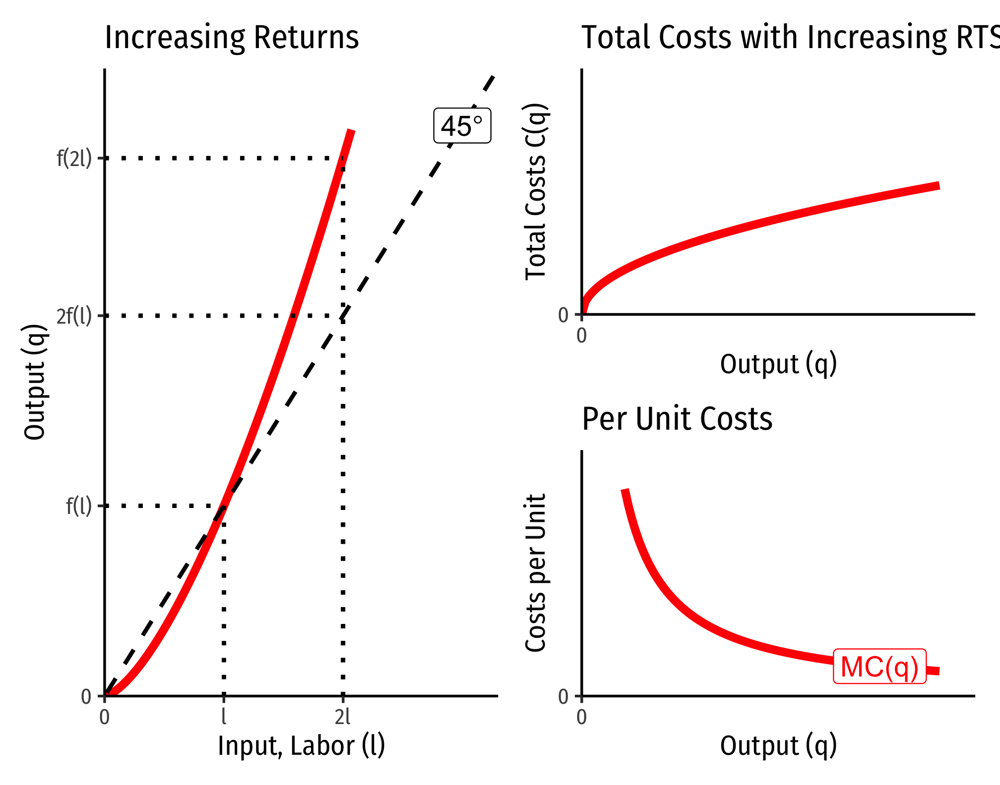
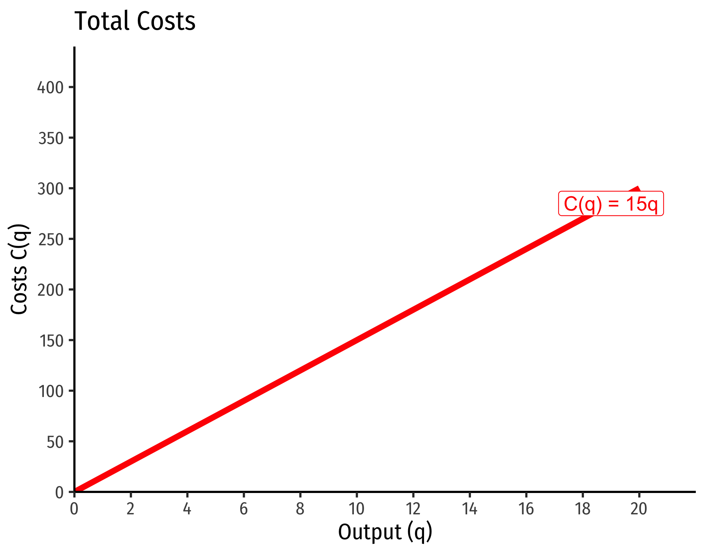
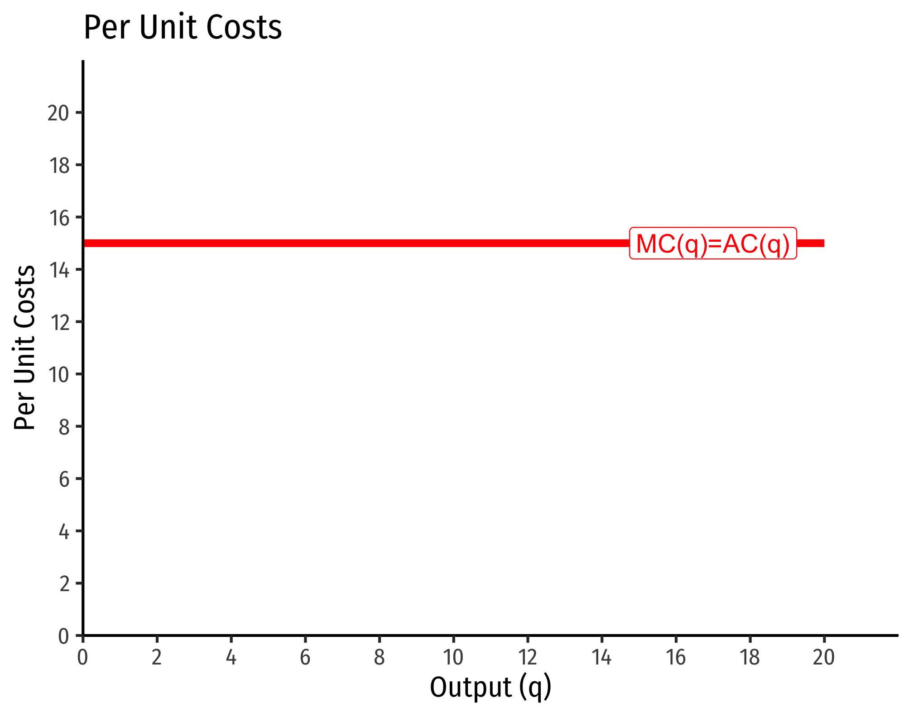
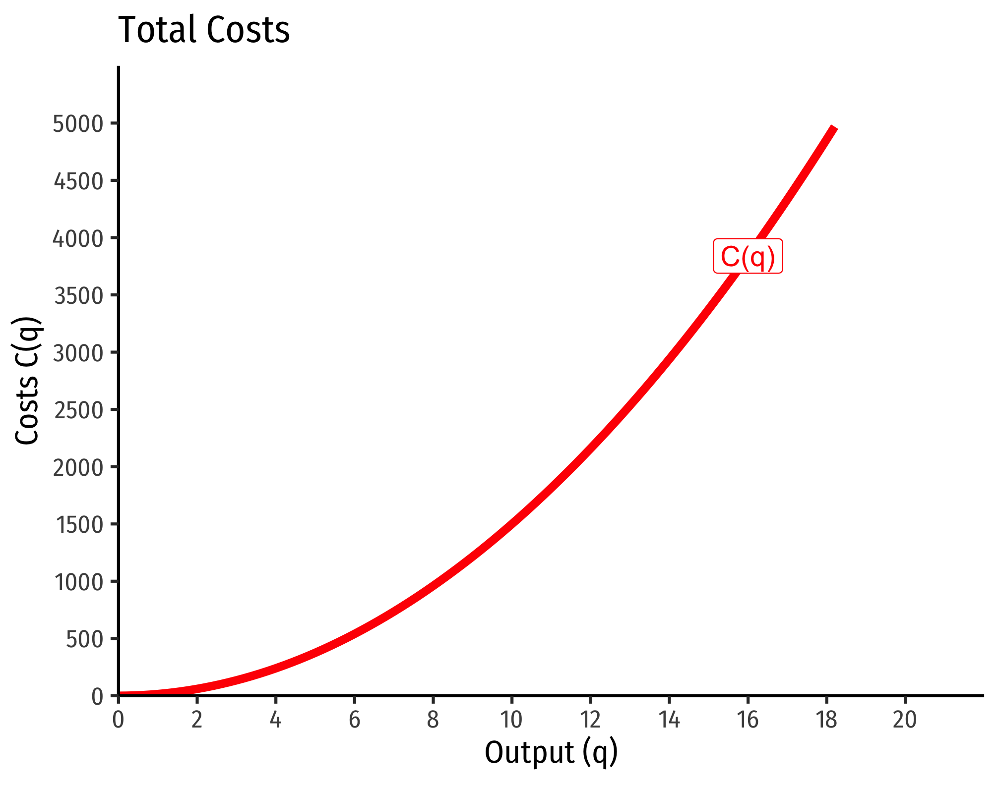
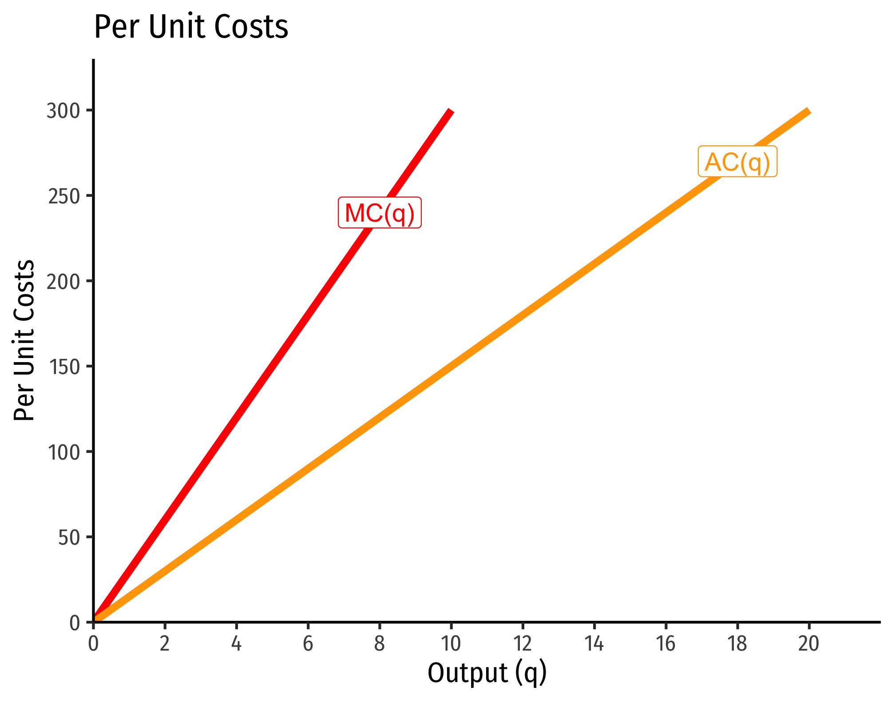

2.4 — Costs of Production — Appendix
From Total Product to Total Cost: Output Expansion Paths
We can trace the output expansion path (OEP) of a firm as the set of optimal (cost-minimizing combinations of inputs at constant prices) production points for different levels of output. These will be all of the tangencies for a given isoquant (output level) with the lowest possible isocost line.
Importantly, we are assuming: (1) firms always minimize total cost at every level of output; and (2) input prices \(w\) and \(r\) do not change as the firm increases output
For a Cobb-Douglas production function, the OEP is a ray from the origin (0,0) through all the optimal combinations. Other production functions may have OEPs that are not straight lines, but curves.
We can trace the total cost function \(C(q)\) for different levels of output \(q\), by identifying the total cost at each optimal (cost-minimizing) combination of \(L\) and \(K\) for each level of \(q\) (again, holding prices constant). I show this in the second graph on the right.
Note here we can also visualize the differences in returns to scale, and begin to see their connection to economies of scale (how output relates to average cost).
Below, I show the output expansion paths and total cost functions for technology with constant returns. Note that as we double the amount of inputs from point \(A\) to point \(B\), we go from using 10 \(L\) and 5 \(K\) to produce 7.07 units of output \((\sqrt{50})\) to using 20 \(L\) and 10 \(K\) to produce 14.14 units of output \((\sqrt{200}\)). This is an exact doubling of output from doubling the scale of production. Notice our total cost will also double, from $40 to $80. Thus, for constant returns, total cost increases proportionate to output.

Below, I show the output expansion paths and total cost functions for technology with increasing returns. Note that as we double the amount of inputs from point \(A\) to point \(B\), we go from using 10 \(L\) and 5 \(K\) to produce 50 units of output to using 20 \(L\) and 10 \(K\) to produce 200 units of output. Here we quadruple output from doubling the scale of production. Notice also our total cost will also increase as we increase output, but at a decreasing rate!

Marginal Cost and Variable Cost
Marginal cost is defined as the change in total costs from a change in output: \[MC(q)=\frac{\Delta C(q)}{\Delta q}\]
Recall that total cost is the sum of fixed and variable costs
\[C(q)=f+VC(q)\] However, since fixed costs never change, any change in total cost is a change in variable cost \[\Delta C(q) = \Delta VC(q)\]
Thus, marginal cost actually measures the change in variable costs from a change in output: \[MC(q)=\frac{\Delta C(q)}{\Delta q}=\frac{\Delta VC(q)}{\Delta q}\] Thus, fixed cost has no effect on marginal cost, and marginal cost is always measuring the change in variable costs with additional output.
Furthermore, because of this relationship with marginal cost measuring the change in variable cost from additional output, for any specific quantity of output, e.g. \(q_1\), the variable cost of producing \(q_1\) can be seen on the graph below as the total area under the marginal cost curve to the left of \(q_1\):

The Relationship Between Returns to Scale and Costs
There is a direct relationship between a technology’s returns to scale1 and its cost structure: the rate at which its total costs increase2 and its marginal costs change3. This is easiest to see for a single input, such as our assumptions of the short run (where firms can change \(l\) but not \(\bar{k})\):
\[q=f(\bar{k},l)\]
Constant Returns to Scale:

Decreasing Returns to Scale

Increasing Returns to Scale

Cobb-Douglas Cost Functions
The total cost function for Cobb-Douglas production functions of the form \[q=l^{\alpha}k^{\beta}\] can be shown with some very tedious algebra to be:
\[C(w,r,q)=\left[\left(\frac{\alpha}{\beta}\right)^{\frac{\beta}{\alpha+\beta}} + \left(\frac{\alpha}{\beta}\right)^{\frac{-\alpha}{\alpha+\beta}}\right] w^{\frac{\alpha}{\alpha+\beta}} r^{\frac{\beta}{\alpha+\beta}} q^{\frac{1}{\alpha+\beta}}\]
If you take the first derivative of this (to get marginal cost), it is:
\[\frac{\partial C(w,r,q)}{\partial q}= MC(q) = \frac{1}{\alpha+\beta} \left(w^{\frac{\alpha}{\alpha+\beta}} r^{\frac{\beta}{\alpha+\beta}}\right) q^{\left(\frac{1}{\alpha+\beta}\right)-1}\]
How does marginal cost change with increased output? Take the second derivative:
\[\frac{\partial^2 C(w,r,q)}{\partial q^2}= \frac{1}{\alpha+\beta} \left(\frac{1}{\alpha+\beta} -1 \right) \left(w^{\frac{\alpha}{\alpha+\beta}} r^{\frac{\beta}{\alpha+\beta}}\right) q^{\left(\frac{1}{\alpha+\beta}\right)-2}\]
Three possible cases:
- If \(\frac{1}{\alpha+\beta} > 1\), this is positive \(\implies\) decreasing returns to scale
- Production function exponents \(\alpha+\beta < 1\)
- If \(\frac{1}{\alpha+\beta} < 1\), this is negative \(\implies\) increasing returns to scale
- Production function exponents \(\alpha+\beta > 1\)
- If \(\frac{1}{\alpha+\beta} = 1\), this is constant \(\implies\) constant returns to scale
- Production function exponents \(\alpha+\beta = 1\)
Example (Constant Returns)
Let \(q=l^{0.5}k^{0.5}\).
\[\begin{align*} C(w,r,q)&=\left[\left(\frac{0.5}{0.5}\right)^{\frac{0.5}{0.5+0.5}} + \left(\frac{0.5}{0.5}\right)^{\frac{-0.5}{0.5+0.5}}\right] w^{\frac{0.5}{0.5+0.5}} r^{\frac{0.5}{0.5+0.5}} q^{\frac{1}{0.5+0.5}}\\ C(w,r,q)&= \left[1^{0.5}+1^{-0.5} \right]w^{0.5}r^{0.5}q^{0.5}\\ C(w,r,q)&= w^{0.5}r^{0.5}q^{1}\\ \end{align*}\]
Consider input prices of \(w=\$9\) and \(r=\$25\):
\[\begin{align*}C(w=9,r=25,q)&=9^{0.5}25^{0.5}q \\ & =3*5*q\\ & =15q\\\end{align*}\]
That is, total costs (at those given input prices, and technology) is equal to 15 times the output level, \(q\):

Marginal costs would be
\[MC(q) = \frac{\partial C(q)}{\partial q} = 15\]
Average costs would be
\[MC(q) = \frac{C(q)}{q} = \frac{15q}{q} = 15\]

Example (Decreasing Returns)
Let \(q=l^{0.25}k^{0.25}\).
\[\begin{align*} C(w,r,q)&=\left[\left(\frac{0.25}{0.25}\right)^{\frac{0.25}{0.25+0.25}} + \left(\frac{0.25}{0.25}\right)^{\frac{-0.25}{0.25+0.25}}\right] w^{\frac{0.25}{0.25+0.25}} r^{\frac{0.25}{0.25+0.25}} q^{\frac{1}{0.25+0.25}}\\ C(w,r,q)&= \left[1^{0.5}+1^{-0.5} \right]w^{0.5}r^{0.5}q^{2}\\ C(w,r,q)&= w^{0.5}r^{0.5}q^{2}\\ \end{align*}\]
If \(w=9\), \(r=25\):
\[\begin{align*}C(w=9,r=25,q)&=9^{0.5}25^{0.5}q^2 \\ & =3*5*q^2\\ & =15q^2\\\end{align*}\]

Marginal costs would be
\[MC(q) = \frac{\partial C(q)}{\partial q} = 30q\]
Average costs would be
\[AC(q) = \frac{C(q)}{q} = \frac{15q^2}{q} = 15q\]
